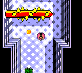
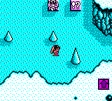
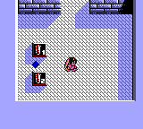
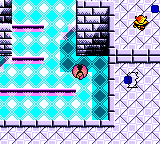
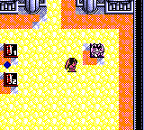
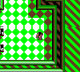
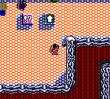

Penta Dragon DX
Stage Palette Review
Current seven-stage review set for live palette tuning. Click any frame to inspect its native 160×144 capture.
Current Stage 4 material split
32,526 Stage 4 cells / 0 headed mismatches
Current Stage 6 green + earth
Stage 6 Qt + headless soaks passed
Unpromoted palette prototype
Prototype MD5: e8baabaaa6b5d5073dba12985e8cfe00

Stage 1 — Rotating cylinder
Clean current-ROM ceiling fixture; the adversarial cat/fish/moth stress state is intentionally excluded.

Stage 2 — Cyan ice
Cyan terrain; rare/life pickups are independently purple.

Stage 3 — Blue-violet chamber
Neutral terrain; health pickups use the red semantic row.

Stage 4 — Material split
Cyan diamond floor, blue-gray masonry, and magenta restricted to bridge accents.

Stage 5 — Orange lava hall
Verified lava stays independent while health pickups render red.

Stage 6 — Green + earth
Vivid organic green with earthy brown structure and shadows; health pickups remain semantic red.

Stage 7 — Red lava / ice walls
Cyan arrows and purple rare pickups remain distinct from red lava and gray walls.